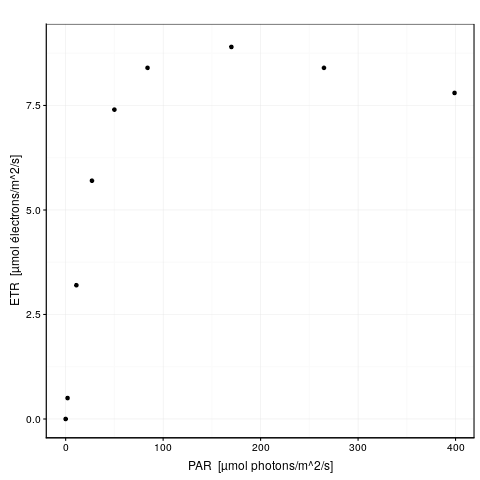

4.2 Principe
La régression non linéaire consiste à modéliser la variation d’une variable (dite variable réponse ou dépendante) par rapport à la variation d’une ou plusieurs autres variables (dites explicatives ou indépendantes). Le modèle utilisé pour représenter cette relation est une fonction mathématique de forme quelconque. Ceci constitue une généralisation de la régression linéaire où la fonction mathématique était nécessairement une droite (\(y = a x + b\) dans le cas de la régression linéaire simple). La fonction est, dans la technique la plus courante, ajustée en minimisant la somme des carrés des résidus (écart entre les observations \(y_i\) et les valeurs prédites par la droite, notées \(\hat{y_i}\)).
Lorsque le nuage de point ne s’étire pas le long d’une droite, nous pouvons tenter de transformer les données afin de les linéariser. Malheureusement, il existe de nombreux cas où la relation n’est pas linéarisable et la régression non linéaire est alors notre meilleur choix.
Il existe, en réalité, une autre raison pour laquelle nous pourrions être amenés à ne pas transformer les données pour les linéariser. Il s’agit du cas où les résidus ont une distribution correcte avec les données non transformées (distribution normale, et variance homogène -homoscédasticité-) lorsqu’on utilise un modèle non linéaire. Dans ce cas précis, une transformation pour linéariser les données devrait permettre d’utiliser une régression linéaire. Mais ce faisant, on rend alors les résidus non normaux et/ou on perd la propriété d’homoscédasticité, ce qui constitue une violation des conditions d’application de la régression par les moindres carrés que nous utilisons ici. Ainsi, dans ce cas-là, il vaut alors mieux ne pas transformer et utiliser plutôt une régression non linéaire à la place d’une régression linéaire pourtant plus simple d’emploi.
4.2.1 Fonction objective
Nous appelons “fonction objective” la fonction qui quantifie la qualité de l’ajustement de sorte que plus le nombre renvoyé par cette fonction est petit, meilleur est l’ajustement. Cette fonction objective peut être définie librement, mais dans de nombreux cas, il s’agit du même critère que pour la régression linéaire par les moindres carrés, à savoir (considérant que la fonction \(f\) que nous souhaitons ajuster a \(k\) paramètres notés \(p_1\), \(p_2\), …, \(p_k\)) :
\[f_{obj}(p_{1},p_{2},...,p_{k})=\sum_{i=1}^{n}(y_{i}-f(x_{i,}p_{1},p_{2},...,p_{k}))^{2}=\sum_{i}(y_{i}-\hat{{y_{i}}})^{2}\]
4.2.2 Calcul itératif
L’ajustement de notre courbe selon le modèle \(y = f(x, p_1, p_2, ... p_k) + \epsilon\) avec les résidus \(\epsilon \approx N(0, \sigma)\) peut se faire de manière itérative, en testant différentes valeurs des paramètres de la fonction, et en retenant au final la combinaison qui minimise le plus la fonction objective.
Par exemple, si notre courbe à ajuster est : \(y = a x^b\), nous devrons estimer conjointement la valeur des deux paramètres \(a\) et \(b\) de la courbe. Bien qu’il s’agisse effectivement de la technique employée pour ajuster une courbe dans un nuage de point, nls() utilise ici des algorithmes d’optimisation efficaces pour trouver la solution plus rapidement. Une recherche en aveugle serait très peu efficace évidemment.
La description détaillée et les développements mathématiques de ces algorithmes d’optimisation sortent du cadre de ce cours. Nous renvoyons le lecteur intéressé à l’annexe C de (Sen and Srivastava 1990). Les algorithmes utilisés dans la fonction nls() sont :
- Gauss-Newton, (par défaut), un algorithme utilisant la différentiation de la courbe et une expansion en série de Taylor pour approximer cette courbe par une série de termes additifs dont la solution peut être trouvée par régression linéaire multiple.
plinear de Golub-Pereyra, bien que peu répandu, est également implémenté. Il est utile en ce sens qu’il sépare les paramètres en deux sous-groupes : ceux qui sont linéaires dans la fonction (coefficients multiplicateurs de termes additifs) et ceux qui ne le sont pas. La recherche itérative ne se fait que sur les seconds. Les premiers étant estimés par régression linéaire. Ainsi, lorsque la fonction ne comporte que peu de paramètres non linéaires, l’algorithme converge beaucoup plus rapidement.
Port est également disponible. Il a la particularité, contrairement aux deux précédents, de permettre de définir des limites supérieures et inférieures acceptables pour chaque paramètres. Cela limite la recherche dans un domaine de validité, lorsque celui-ci peut être défini.
Reprenons le calcul de notre RLC pour P. oceanica. L’argument trace = TRUE peut être ajouté à l’appel de nls() pour visionner les différentes étapes du calcul itératif. Voici ce que cela donne :
rlc_nls <- nls(data = rlc, etr ~ pgh_model(par, etr_max, alpha, beta),
start = list(etr_max = 9, alpha = 1, beta = 0),
trace = TRUE)# 24.34024 : 9 1 0
# 4.236559 : 8.4785637209 0.5324097242 -0.0004037391
# 1.141967 : 8.772552037 0.289806296 0.001855493
# 0.1807006 : 9.361592818 0.325563316 0.003954183
# 0.1793698 : 9.353620948 0.327230129 0.003990887
# 0.1793659 : 9.351296953 0.327369993 0.003982181
# 0.1793658 : 9.35108479 0.32738331 0.00398142
# 0.1793658 : 9.351064462 0.327384565 0.003981347A gauche, nous avons la valeur de la fonction objective \(f_{obj}\), et à droite des deux points, la valeur actuelle des trois paramètres dans l’ordre etr_max, alpha et beta. La première ligne indique l’étape 0. \(f_{obj}\) vaut 24,3 avec les valeurs par défaut. Dès l’étape suivante (itération #1), cette valeur est divisée par 6 et vaut 4,2. A ce stade, etr_max = 8,5, alpha = 0,29 et beta = 0,0019. Les étapes #2 et #3 font encore significativement diminuer \(f_{obj}\), et puis nous grapillons des décimales.
Voici une animation de ce processus :

La convergence est considérée comme obtenue lorsque la différence de valeur de \(f_{obj}\) d’une étape à l’autre tombe en dessous d’un seuil de tolérance que nous nous sommes fixés. C’est l’argument control = de nls() qui en reprend les détails, voir ?nls.control. Les options sont :
maxiter =le nombre maximum d’itérations permises. Pour éviter de calculer à l’infini, nous arrêtons à cette valeur et décrétons que le calcul n’a pas convergé. La valeur pas défaut est de 50 itérations.tol =le niveau de tolérance pour décider que l’on a convergé. C’est lui notre seuil de tolérance ci-dessus. Par défaut, il vaut1e-05, soit 0,00001. C’est une valeur relative. Cela siginifie que la variation de la fonction objective ne doit pas être plus grande que cela en valeur relative, soit \(|\frac{fobj_i - fobj_{i + 1}}{fobj_i}| < tol\).… d’autres arguments moins importants ici.
Comme nous pouvons le constater, le seuil de tolérance par défaut est très bas, de sorte que nous n’ayons besoin de le changer que très rarement.
4.2.3 Pièges et difficultés
L’ajustement d’un modèle de manière itérative en utilisant un algorithme d’optimisation est une tâche délicate. Dans certains cas, la convergence est lente (il faut beaucoup d’étapes pour arriver au résultat). Dans d’autre cas, le processus s’interrompt à cause d’une singularité de la fonction à ajuster, d’une discontinuité, ou d’une fonction qui n’est pas définie sur une partie du domaine, … Nous pouvons aussi rencontrer des divisions par zéro ou des paramètres qui tendent vers l’infini lors des calculs. Dans ce cas, il faut tenter d’autres valeurs de départ, voire changer le paramétrage de la fonction.
Valeurs initiales
La recherche de la solution optimale nécessite de partir de valeurs de départ plausibles pour les paramètres du modèle (c’est-à-dire, un ensemble de valeurs pour les paramètres telle que la courbe initiale est proche de la solution recherchée). Définir les valeurs initiales n’est pas toujours chose aisée, et de plus, le résultat final peut dépendre fortement de ces valeurs initiales, à savoir que, si l’on choisi des valeurs initiales trop éloignées de la solution recherchée, on peut très bien se trouver enfermé dans une fausse solution (un minimum local de la fonction objective qui est moins bas que le minimum absolu que l’on recherche).
Considérons un cas fictif simple où la fonction à ajuster n’aurait qu’un seul paramètre \(p\). Dans ce cas, nous pouvons visualiser la valeur de la fonction objective en fonction de la valeur choisie pour le paramètre \(p\). Admettons que nous obtenons le graphique suivant pour cette représentation :

Nous observons que la fonction objective a un minimum global pour \(p\) valant 0,72. Par contre, un minimum local est également présent pour \(p\) valant -0,26. Dans ce cas, si nous prenons une valeur de départ pour \(p\) supérieure à 0,25, nous atterrirons dans le minimum global. Mais si nous prenons une valeur plus faible, par exemple 0 ou -0.5 comme valeur de départ, nous nous ferons piéger dans le minimum local. Dans ce cas, nls() déclarera qu’elle a convergé et que la valeur de \(p\) vaut -0,26.
Si ce n’est toujours pas clair, imaginez que la courbe en rouge représente la forme d’un terrain sur lequel vous placer une balle à la position de départ. En fonction de l’endroit où vous la placer, la balle va glisser le long de la pente et finir par s’immobiliser dans une des deux cuvettes… mais celle de droite (minimum global) est plus profonde que celle de gauche (minimum local).
Il vaut toujours mieux tester différentes combinaisons de valeurs de départ pour vérifier si la convergence se fait correctement et pour démasquer les cas de minima locaux.
Complexité du modèle
Lorsque la convergence a du mal à se faire, ceci est éventuellement lié à la complexité de la fonction que l’on cherche à ajuster. Les propriétés mathématique de la courbe choisie peuvent très bien faire que cette courbe ne soit pas définie pour certaines valeurs des paramètres, ou qu’elle ait un comportement spécial dans un certain domaine (par exemple, courbe tendant vers l’infini). Ces cas sont difficilement traités par la plupart des algorithmes de minimisation de la fonction objective, et des erreurs de calcul de type “division par zéro”, ou “résultat non défini” peuvent apparaître. Dans les meilleures implémentations (nls() en est une), des gardes-fous ont été ajoutés dans le code de la fonction pour éviter les erreurs dans pareils cas. Toutefois, il n’est pas possible de traiter tous les cas possibles. Ainsi, il arrive parfois que le modèle choisi ne soit pas ajustable sur les données.
Au final, l’ajustement d’un modèle non linéaire par les moindres carrés est une opération beaucoup plus délicate que l’ajustement par les moindres carrés d’un modèle linéaire. Dans le cas linéaire, la solution est trouvée de manière immédiate grâce à un calcul matriciel simple. Dans le cas non linéaire, il n’existe souvent pas de solution miracle et le meilleur ajustement doit être recherché de manière itérative. Nous verrons ci-dessous que R propose, pour certains modèles appelés ‘SelfStart’ une solution élégante pour calculer automatiquement les valeurs initiales et pour converger très rapidement vers la solution recherchée, mais la plupart du temps il faut tâtonner pour ajuster sa courbe.
A vous de jouer !
- Réalisez un rapport scientifique sur la vitesse d’une réaction chimique, en définissant un modèle non linéaire pertinent pour ces données.
Vous avez à votre disposition une assignation GitHub Classroom :
Lisez le README afin de prendre connaissance de l’exercice
4.2.4 Modèles ‘selfStart’ dans R
Dans certains cas, il existe des petites astuces de calcul pour converger directement vers la solution, ou du moins, pour calculer des valeurs de départ très proches de la solution recherchée de sorte que l’algorithme de recherche pourra converger très rapidement. Par exemple, lorsqu’il est possible de linéariser le modèle en transformant les données. Dans ce cas, une bonne estimation des valeurs de départ des paramètres peut être obtenue en linéarisant la relation et en calculant les paramètres par régression linéaire. Ensuite, les paramètres obtenus sont retransformés dans leur forme initiale, et ils sont utilisés comme valeurs de départ.
Par exemple, si nous décidons d’ajuster un modèle allométrique de Huxley, de type \(y = a x^b\)11, nous pouvons linéariser la relation en transformant les deux variables en logarithmes. En effet, \(\log(y) = \log(a x^b)\), ce qui est équivalent à une droite en développant: \(\log(y) = b \log(x) + \log(a)\). Le paramètre \(b\) devient donc la pente de la droite, et \(\log(a)\) devient l’ordonnée à l’origine dans le modèle linéaire transformé. Une fois la droite ajustée, on a directement la valeur de \(b\), et il suffit de calculer l’exponentielle de l’ordonnée à l’origine pour obtenir \(a\). Toutefois, comme les résidus sont différents dans la relation non transformée initiale, il ne s’agit pas de la solution recherchée mais d’une bon point de départ très proche de cette solution. Ainsi, on prendra les valeurs de \(a\) et de \(b\) ainsi calculées par la droite en double log comme point de départ, et on laissera l’algorithme de recherche du minimum terminer le travail. En fait, c’est exactement de cette façon que les modèles dits ‘selfStart’ fonctionnent dans R. Plus qu’une fonction, il s’agit en réalité d’un programme complet qui contient :
- la fonction elle-même,
- la résolution analytique de la dérivée première de la fonction en chaque point (utilisée par l’algorithme de convergence pour déterminer l’écart à apporter aux paramètres à l’itération suivante),
- du code optimisé pour choisir les valeurs initiales idéales (proches du minimum global pour la \(f_{obj}\)) automatiquement,
- du code pour optimiser la convergence, éventuellement.
Toutes les fonctions ‘SelfStart’ ont un nom commençant par SS. nous pouvons donc les lister à l’aide de l’instruction suivante :
apropos("^SS")# [1] "SSasymp" "SSasympOff" "SSasympOrig" "SSbiexp" "SSD"
# [6] "SSfol" "SSfpl" "SSgompertz" "SSlogis" "SSmicmen"
# [11] "SSweibull"Ensuite, nous recherchons l’aide relative à ces fonctions, par exemple via ?SSasymp.
Références
Sen, A., and M. Srivastava. 1990. “Regression Analysis, Theory, Methods and Applications.” Berlin: Springer, 347 pp.
Un modèle ‘selfStart’ est disponible pour cette fonction dans le package
vegan, voir?vegan::SSarrhenius().↩